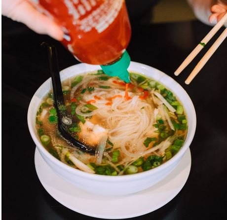

How to cook Chicken Pho
Ingredients

- 1 Whole Chicken
- Dried Rice Noodles
- Water
- Spices
- Cloves
- Fennel
- Anise
- Coriander
- Cinnamon
- Toppings
- Onion/Ginger
- Fish Sauce
- Sugar
- Lime
- Chilli
- Coriander
- Noodles
- Beansprouts
- Mint
- Thai Basil
Instructions
- Char the onion and ginger in a pan
- Get a big pot - add 6 liters of water and boil it
- Add in Chicken and herbs and simmer for 1.5 hours
- Prepare the noodles before serving! You boil it for 5 minutes in boiling water and then set them in cold water for 10-20 seconds
- When the chicken and soup is fully cooked - Strain the chicken and serve it with all the toppings
- If you have anything left over you can freeze it and reuse it for next time
Notes: I found the recipe from an external website: https://www.recipetineats.com/vietnamese-chicken-pho-soup-pho-ga/